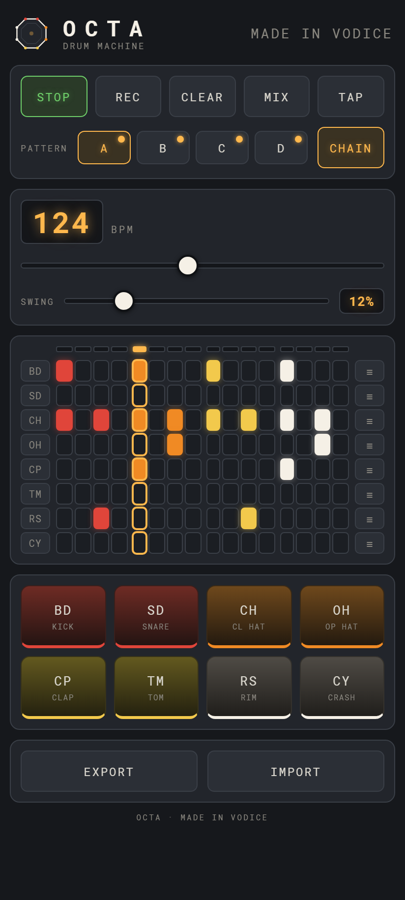
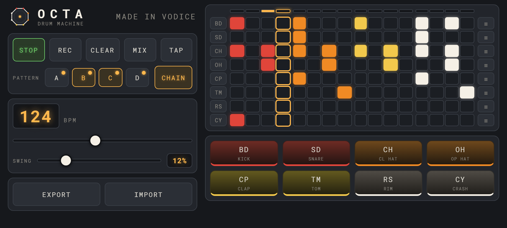

drum machine
An 8-voice drum machine that runs entirely on your device. Every sound is synthesised live with the Web Audio API — there are no sample files, no account, and nothing to sign up for.
Android 7.0 or newer. Your phone will ask you to allow installing from this source — that prompt is normal for apps installed outside the Play Store. You can also read the source on GitHub.


Last updated: 20 August 2026
OCTA collects nothing. It has no servers, no accounts, no ads, and no analytics. Nothing you do in the app is sent anywhere, because the app never contacts the network at all.
Your patterns, tempo, swing and mixer settings are saved on your own
device — in browser localStorage on the web, and in the
equivalent on-device storage in the Android app. This data never leaves
your device, and neither the developer nor anyone else can read it. Removing
the app, or clearing its data, deletes it permanently.
OCTA makes no network requests in normal use. The web version is a Progressive Web App: after the first load it runs fully offline from a service worker that caches only its own files.
The Android app asks for no runtime permissions — no microphone, storage,
location, contacts or camera. All sound is generated on the device itself.
The app declares the standard INTERNET permission because the
Android WebView runtime it is built on requires it, but OCTA never uses it.
There are no third-party SDKs, advertising networks, analytics or crash reporting services in OCTA of any kind.
Because OCTA collects no data at all, it collects no data from anyone, children included.
If this policy ever changes, the updated version will be posted on this page with a new date above.
Questions about this policy: joskolatin@gmail.com